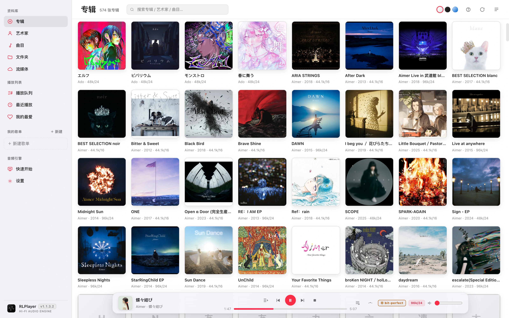
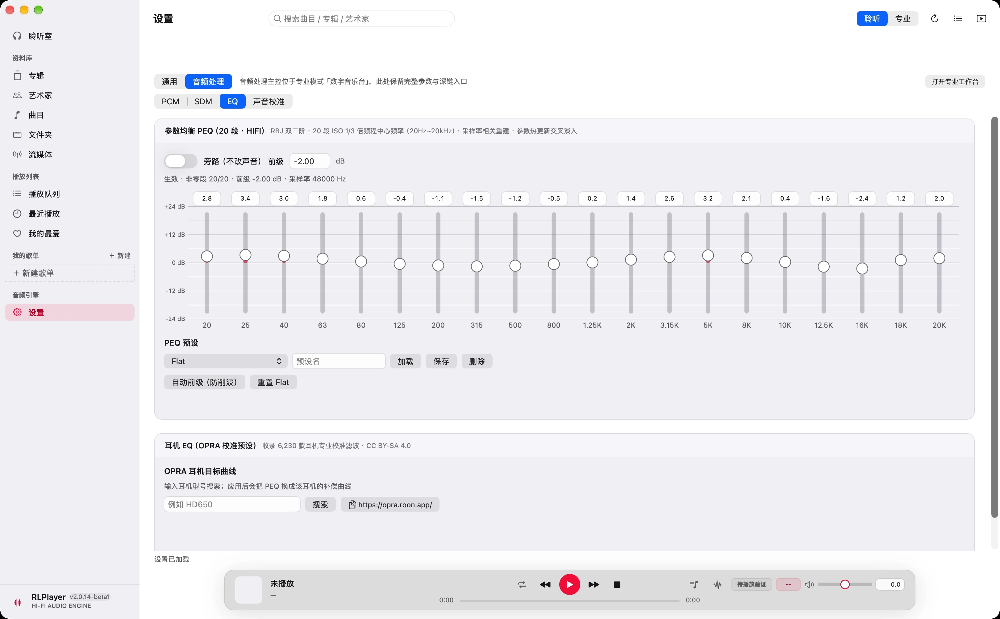
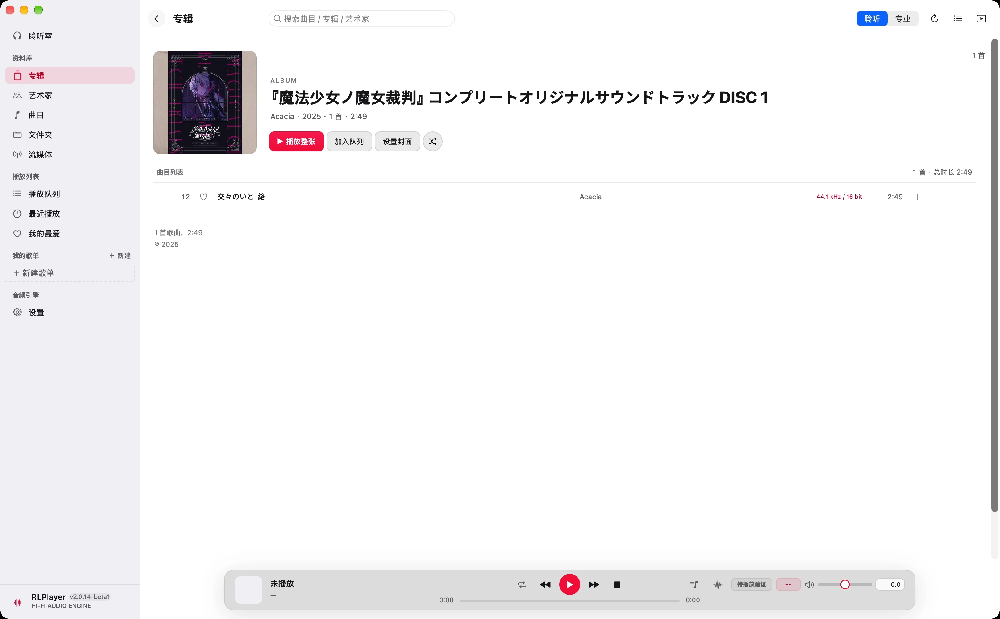

−189.1dB
多相升频阻带抑制
44.1k → 384k 实测。内置 52 款命名滤波器预设，通带纹波 0.0000 dB，最差谐波 −134.54 dBc。
RLPlayer v1.1.4 · macOS Native Hi-Fi Audio Engine
将 52 款多相有理数 Sinc 升频器、四族高阶 ΔΣ 调制器、零延迟均匀分块 FFT 卷积、20 段 RBJ 参数均衡与 CoreAudio Hog 物理独占整合于单一原生进程。全链路 C++ 自研算法，每一项声学指标均可独立复算与验证。

Objective Benchmarks
基于 Apple M4 实机与 132 项自动化测试套件测得，覆盖多相重采样阻带衰减、ΔΣ 调制带内信噪比、分块卷积数学精度与端到端位流一致性。
−189.1dB
44.1k → 384k 实测。内置 52 款命名滤波器预设，通带纹波 0.0000 dB，最差谐波 −134.54 dBc。
113.5dB
DSD256 实测。涵盖 Butterworth、7 阶 Chebyshev、EC 误差反馈与 AHM 多电平四族调制器。
1,058,400字节
同速率、无 DSP 介入时 1-bit 原始位流直通封装 DoP，百万字节逐位比对零偏差。
≤ 6.1e−14
零延迟均匀分块 overlap-save 卷积对比直接卷积，达到双精度浮点数学精度极限。
20段
ISO 1/3 倍频程中心频率网格，±24 dB 量程。单段 +6 dB 在 44.1 / 48 / 96 / 192 kHz 实测 6.0000 dB。
6,230+
完整内置 OPRA 开放声学数据库，按品牌与型号毫秒级检索，一键载入参数均衡器。
19 项
扫描 THD+N、本底噪声、动态范围、LRA、峰值因子、声道相关性与高频滚降截止点，识别有损转码文件。
LNS15 / 5–15 阶心理声学噪声整形
提供 NS1 / NS4 / NS5 / NS9 / LNS15 五档噪声整形与 RPDF / TPDF / Gauss1 / Shaped 四种抖动；44.1k → 705.6k 带内信噪比收益达 +86.5 dB。
132
项自动化回归测试
覆盖 DSP 精度、0 dBFS 满幅过载恢复与位流一致性
测试基准：Apple M4 · macOS · CTest 全量自动化门禁与离线信号分析器（--analyze）实测复核。
Signal Architecture
从音频容器字节解析、DirectSDM 位流直通、双精度浮点 DSP 管线到 CoreAudio 物理独占与局域网无损投放，每一级状态与耗时均可实时透视。
01
C++ 原生解析 .dsf（LSB-first 块交错）与 .dff（MSB-first 连续帧）1-bit 音频流；FLAC / WAV / MP3 / OGG 采用自研容器头直读解析器，标签扫描速度达外部 ffprobe 调用的 60× 至 250×。
02
当 DSD 音源与目标输出速率匹配、且未启用任何均衡、卷积或增益调节时，1-bit 原始位流不经浮点转换，直接封装为 DoP 位流输出，端到端实测 1,058,400 字节逐位一致。
六态 Bit-Perfect 徽标：底栏实时指示「直通 / PCM→PCM / PCM→DSD / DSD→DSD × 是否逐位保真」，点击即可展开全链路信号透视面板。
03
进入处理管线后，音频流依次通过响度与过采样峰值保护、20 段参数均衡、零延迟分块 FFT 卷积、多相有理数 Sinc 重采样及输出噪声整形 / ΔΣ 调制。
float64 系数计算 + 128 样本交叉淡入热更新）与零延迟均匀分块 FFT 卷积（支持 Apple Metal GPU 加速）。04
基于 macOS AUHAL 开启 Hog Mode 独占声卡并直接锁定硬件物理采样率与位深，彻底绕开系统混音器重采样；同时原生集成 UPnP 流式升频供源与应用内 AirPlay 直推。
DeviceBusy），USB 声卡拔出或端点掉线时 2 秒内触发 DEVICE_LOST 安全停机。0x05 / 0xFA 交替标记），跨分块、暂停恢复与曲目结尾自动填充合法相位接力的 DoP 静音帧。AudioToolbox ALAC（44.1 kHz / 16-bit）实时无损编码与 RTP 时钟同步。
Available in v1.1.4
集母带级本地播放、多协议局域网无损投放、免驱动系统内录、耳机声学校准、音质鉴定与古典曲库管理于一体。
通过 CoreAudio AUHAL 底层单元抢占 Hog Mode 并锁定硬件物理流格式（kAudioStreamPropertyPhysicalFormat），自动探测当前 DAC 支持的全部采样率与位深矩阵。
CoreAudio AUHAL · Hog Mode · Physical Format Lock
原生解析 DSF / DFF 容器，支持 DirectSDM 1-bit 逐位直通、同族整数倍 DSD64 ↔ 128 ↔ 256 纯 DSD 域变速，以及 FIR / IIR / CIC 三种高精度抽取器。
1,058,400 字节端到端逐位一致
SSDP 跨多网卡发现局域网数播渲染器（自动绕过代理虚拟网卡），支持原文件 HTTP Range 206 直供，或调用本机 52 款多相滤波器分块流式升频后推送高采样率 WAV。
基于 Apple CATapDescription 与 AudioHardwareCreateProcessTap 私有聚合设备机制，无需安装 BlackHole 等第三方虚拟声卡、无需申请屏幕录制权限，即可在后台无损抓取系统混音流。
零内核驱动侵入：完全基于 macOS 14.2+ 原生 CoreAudio Process Tap API 实现，即开即用。
完整内置 Open Product Research Audio (OPRA) 数据库，支持按品牌与型号毫秒级检索，提供 Harman 等 11 类调音目标曲线原理说明与 SVG 频响预览，一键应用至 20 段参数均衡器。
⌥ Option 横向微调频率防手抖）与自动前级负增益防削波。一键扫描曲目的 THD+N、本底噪声、动态范围（DR）、响度范围（LRA）、峰值因子、左右声道相关性、单声道折叠损失及高频谱滚降截止点，精准识别有损升频的「假无损」曲目。
原生构建 COMPOSER → Work（作品）→ Movement（乐章）→ Performance（演绎版本） 四层古典实体模型，支持按作品名与作曲家实时检索 Discogs 全球录音版本（指挥 / 乐团 / 独奏 / 厂牌 / 年代）并按演绎智能去重。
[mm:ss.xxx] 时间轴的滚动歌词。/api/llm/models 模型自动发现）。
采用纯正 Cocoa NSWindow + WKWebView 单进程宿主，前后端通过进程内 rlplayer://app/ 自定义 Scheme 直接内存通信，主进程不监听任何本地网络端口。
librtagpu.dylib：运行时编译 Metal Shading Language (MSL) 内核，加速多相 Sinc 升频与长脉冲响应 FFT 卷积。Shift + 0.1 dB 母带级微调（双击归零）。Apple Silicon arm64 · Single-Process In-Memory IPC · Zero Open Ports
Engineering Stack
不依赖 Electron、Python 或外部后台服务进程。从 macOS 窗口宿主、数字信号处理算子到局域网推流协议，全部基于 C++17 与 Objective-C++ 原生构建。
01 · HOST & RUNTIME
宿主层（tools/mac_host.mm）使用原生 AppKit 与 WebKit，将核心引擎 librlapp_core 直接静态链接入同一进程。通过 WKURLSchemeHandler 拦截 rlplayer://app/ 请求并在 GCD 并发队列分发二进制安全的 NSData 响应；配合 WKScriptMessageHandlerWithReply 传输通道与随包内置的自编译 arm64 精简版 FFmpeg 8.1.2（ffmpeg / ffprobe），无需用户额外安装命令行解码环境。
02 · DSP & METAL KERNELS
多相有理数 Sinc 重采样（resampler.h）、均匀分块 overlap-save FFT 卷积（convolution.h）、5–15 阶噪声整形（dither.h）与四族 ΔΣ 调制器（modulator.h）全程采用 64-bit double 双精度浮点运算；20 段 RBJ 双二阶 PEQ（peq.h）采用 float64 系数计算与 128 样本交叉淡入热更新；librtagpu.dylib 按需编译 Metal Shading Language 内核加速重负载运算。
03 · AUDIO I/O & PROTOCOLS
音频输出直接操作 AudioUnit (AUHAL)、kAudioDevicePropertyHogMode 与 kAudioStreamPropertyPhysicalFormat；系统回环基于 macOS 14.2+ CATapDescription 与 AudioHardwareCreateProcessTap 构建私有聚合设备；网络投放与资料中心基于 libcurl、AudioToolbox（实时 ALAC 编码）、原生 SSDP、mDNS (_raop._tcp) 及 RTP 协议栈实现。
Roadmap & Research
在现有自研信号链与 Apple Silicon 原生架构之上，持续向用户态 USB Audio 2.0 硬件直通、多声道房间声学测量、参考级 DSP 2.0 与采样级无缝播放演进。
在应用进程内自研完整的 macOS 用户态 USB Audio Class 2.0 (UAC2) 协议栈：通过官方公开的 IOUSBHost / IOKit 接口直接独占接管 USB DAC 音频流接口，彻底绕开 CoreAudio 的 PCM 壁垒。无需安装内核扩展（No kext）、无需关闭 SIP（系统完整性保护），停止播放或退出软件时平滑释放接口归还系统。
CS_INTERFACE、独立时钟域与 DSD AltSetting，兼容 XMOS、Thesycon、Comtrue (CT7601)、Amanero 等原生位打包（DSD_U32_BE / LE / U16）。突破 macOS 音频上限：消除 DoP 伪装封装带来的 33% USB 带宽浪费与采样率折半限制，在 PCM 上限 768 kHz 的旗舰解码器上完整解锁硬件原生 DSD512 / DSD1024 实力。
打通「Process Tap 系统内录 / 物理采集 → 64-bit 自研 DSP → 独占输出」实时闭环，让整台 Mac 的流媒体、视频伴音乃至外置黑胶唱放输入实时流经 20 段 PEQ、OPRA 耳机校准、房间 FIR 卷积与多相升频器。
room_correction 与 CoreAudioRoomTransport 已就位）：Farina 对数扫频 → 测量麦同步采集 → 频域反卷积 → 心理声学平滑 → 自动生成每声道 32-bit Float 最小相位校正 FIR。2.0 / 2.1 / 5.1 / 7.1 / 5.1.2 / 7.1.4 六种扬声器布局（含 80 Hz LFE 低音管理），支持一键 A/B 盲听与按输出布局自动挂载。升级 DSD 管线出口架构：PEQ、卷积与多相升频后的 64-bit 双精度浮点平面数据不再经过中间 24-bit PCM 量化中转，直接送入 ΔΣ 调制器，并按插值后真实信号包络动态计算调制余量。
poly-sinc-ext2、poly-sinc-xtr、sinc-MGa / Lh、minringFIR-lp 等 27 款高阶预设）与自适应抽头预算反解。vDSP) 深度向量化，新增运行期计算后端与浮点精度自证报告（CPU FP64 / Metal FP32）。在正在播放页内嵌 L0 / L1 / L2 三级折叠实时分析仪（支持按曲去重、并发受控与切歌立即取消），并引入独立 4× / 8× 过采样真峰值（True Peak dBTP）测定。
升级 Server-Sent Events (SSE) 流式解析器，实时展示「权威百科抓取 → 发行版本核对 → 深度导览生成」阶段进度并以流式打字机效果呈现内容；引入专辑上下文（Album Context）与引用归属校验。
Front Cover, Type 3）：临时文件构建 → PCM 音频流逐位比对与 MP3 Gapless Delay 边界校验 → 原文件备份 → 原子替换 → 异常无损回滚。构建跨曲目后台预解码槽与 DSP 滤波器历史状态无缝桥接，让现场音乐会、歌剧与古典交响乐专辑在切歌时实现 0 采样点静音间隙。
0x05 / 0xFA 严格连续）与 10–20 ms 余弦平滑音量斜坡（0 dB 自动旁路），彻底消除切歌爆音与增益调节拉链声。MPNowPlayingInfoCenter / MPRemoteCommandCenter）、多显示器窗口坐标记忆、封面缓存 LRU 容量管理及 Apple Developer ID 签名公证。从已落地的自研 DSP 基座出发，按明确的技术依赖与工程门禁逐级推进。
52 款多相 Sinc 升频、4 族 SDM、DirectSDM 直通、CoreAudio Hog 独占、UPnP 流式升频、应用内 AirPlay、6,230+ OPRA、古典四层模型与单曲页三级实时分析／dBTP 真峰值。
SSE 流式 AI 导览、全库补图工作台、五重门禁封面内嵌与 macOS 平台 QoS 打磨。
2.0–7.1.4 房间声学测量向导、系统全局实时 DSP 机架、79+ 命名滤波器全景矩阵、64-bit Float DSD 调制专线与多级级联插值。
自研用户态 UAC2 USB 异步驱动栈（真 Native DSD64–1024 直通与升频直出）及采样级 0 间隙无缝播放引擎。
Download & Open Source
原生 Apple Silicon (arm64) 独立安装包，内置全部解码与 Metal 计算组件，拖入 Applications 即可运行。
v1.1.4最新正式版
macOS 13.0+ · Apple Silicon 原生 arm64。应用包内已完整内置自编译 ffmpeg / ffprobe 解码组件、librtagpu.dylib（Metal 内核）与离线诊断工具，无需单独配置外部依赖环境。
34b9305bf597228c2181f7e1ca3fc29675c8a774b88e976442acc1f0c7568761
终端核对命令：shasum -a 256 RLPlayer-1.1.4-macOS-arm64.dmg
xattr -cr /Applications/RLPlayer.app
将 RLPlayer 拖入「应用程序」后，在终端执行一次即可清除隔离属性并正常打开。
Credits & Community
感谢每一位参与 RLPlayer 研发、视觉设计、实机测试与社区共建的伙伴。
功能研发协作、工程联调与模块改进
品牌视觉识别、产品图标与媒体美术设计
多设备实机听音测试、边界场景排查与反馈